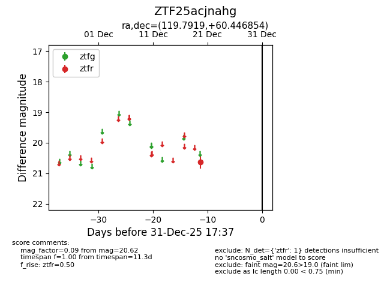
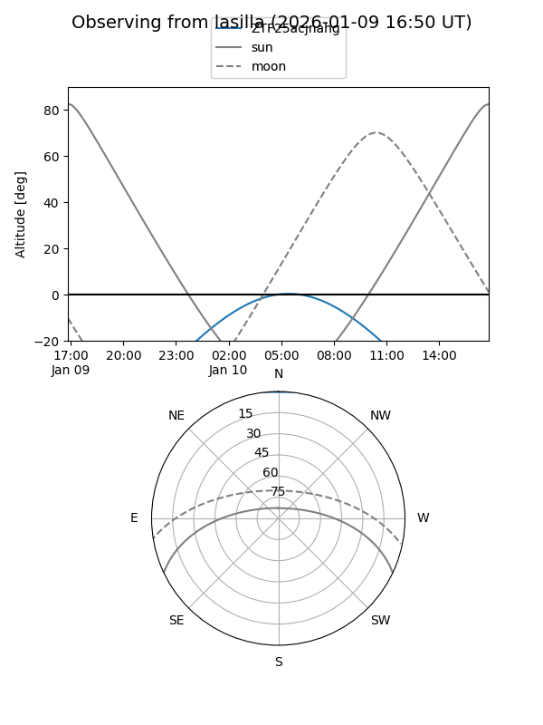
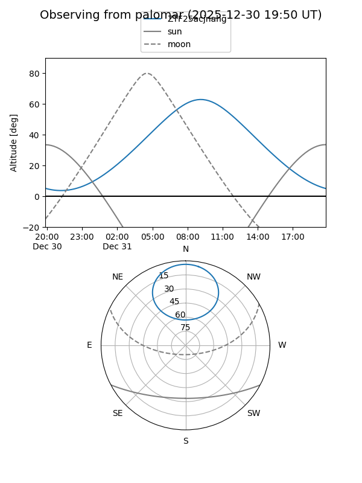

ZTF25acjnahg
Target ZTF25acjnahg at 2025-12-20 11:39
Aliases and brokers:
FINK: fink-portal.org/ZTF25acjnahg
Lasair: lasair-ztf.lsst.ac.uk/objects/ZTF25acjnahg
ALeRCE: alerce.online/object/ZTF25acjnahg
alt names
ZTF25acjnahg (ztf,fink_ztf)
Coordinates:
equatorial (ra, dec) = 119.7919,+60.44685
equatorial (HMS+DMS) = 07:59:10.05,+60:26:48.68
galactic (l, b) = (156.5875,+31.63504)
Flags:
Photometry:
last ztfr=20.62
1 ztfr detections
Lightcurve

Visibility


Additional plots